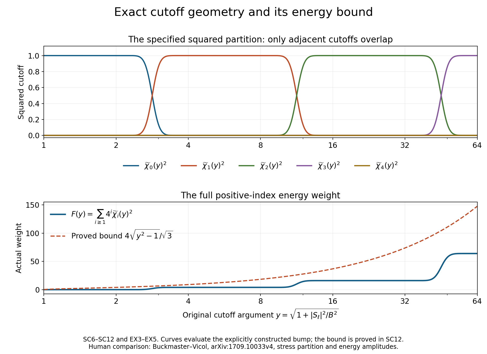
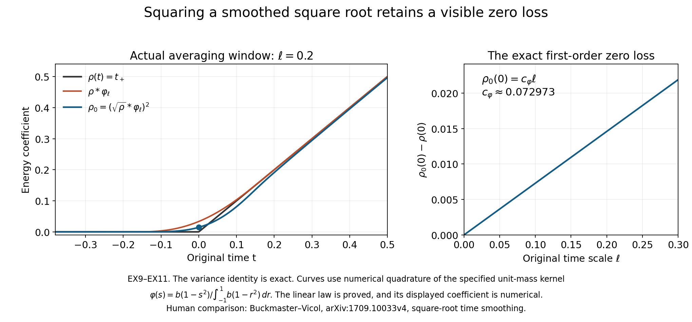

Mollification, stress cutoffs and the energy coefficient
Lesson 23 gave the complete finite velocity and stress correction. This chapter constructs the amplitudes used by that correction. It keeps the original mollified equation, builds every stress cutoff, and proves the energy coefficient's smoothness, positivity and full derivative bounds, including at zero.
The original force, viscosity, volume, energy integrals and amplitude prefactor stay explicit. The rational coefficient functionals and their exact constant are from lesson 21, BG1–BG32. The intermittent fields are from lesson 22. IC and IK labels refer to the full residual and kernel proofs of lesson 23. SC labels below identify the mollification and stress partition; AB labels identify the complete amplitudes.
The human source is Tristan Buckmaster and Vlad Vicol, Nonuniqueness of weak solutions to the Navier–Stokes equation, arXiv:1709.10033v4. Its original author TeX was read at 1–286, 674–785, 833–1103 and 1398–1531 for the parameter definitions, induction, mollification, cutoffs and energy comparison. This is independently written exposition. Source formula corrections are identified explicitly and proved by exact comparison; they do not imply a verdict on the entire paper.
Five solved exercises compute an actual shear commutator, the geometry of every cutoff overlap, a construction for every original volume, the exact smoothing loss at zero, and the complete resulting physical energy error. The infinite iteration requires further velocity and residual estimates; the finite results here do not assume them.
SC1. Complete mollified equation and original viscosity
Let the original smooth periodic fields on the cubic torus of period \(L\) solve IC1 with the same \(\nu>0\). Use nonnegative, even, smooth compactly supported original Friedrichs kernels \(\phi\) in space and \(\varphi\) in time, each with integral one, and retain
\[ K_\ell(y,s)=\ell^{-4}\phi(y/\ell)\varphi(s/\ell), \qquad \mathcal M_\ell h(x,t) =\int_{\mathbb R^3\times\mathbb R} K_\ell(y,s)h(x-y,t-s)\,dy\,ds. \tag{SC1} \]The spatial field in the integrand is its original periodic extension. Times are restricted to those for which the entire kernel support lies in the interval on which the original equation is known. This imposes no unproved extension across a time endpoint. Put
\[ u_\ell=\mathcal M_\ell u,\quad S_\ell=\mathcal M_\ell S,\quad f_\ell=\mathcal M_\ell f, \quad D=u_\ell\otimes u_\ell-\mathcal M_\ell(u\otimes u), \quad D^\circ=D-\tfrac13\operatorname{tr}D\,I . \tag{SC2} \]Differentiating the actual compactly supported integral commutes with each derivative. Linearity preserves divergence, symmetry and trace. The complete resulting equation is
\[ \begin{aligned} \partial_tu_\ell+\operatorname{div}(u_\ell\otimes u_\ell) +\nabla p_\ell-\nu\Delta u_\ell &=f_\ell+\operatorname{div}(S_\ell+D^\circ),\\ p_\ell&=\mathcal M_\ell p-\tfrac13\operatorname{tr}D, \qquad\operatorname{div}u_\ell=0 . \end{aligned} \tag{SC3} \]Indeed the equation with pressure \(\mathcal M_\ell p\) has the full tensor \(D\) on its right side. Removing its trace subtracts exactly \(\nabla\operatorname{tr}D/3\) from both sides, proving SC3 and its sign. For the source's unforced equation \(f=f_\ell=0\). For a general force the receiver is the actual \(f_\ell\), which is not silently identified with the original \(f\).
The source's displayed equation at line 690 replaces \(\nu\) by one, whereas its original equations at 174 and 248 retain \(\nu\). Its pressure at 697 subtracts the full \(\operatorname{tr}D\), rather than one third. With the same displayed trace-free tensor, the exact residual of those two printed choices is
\[ -(1-\nu)\Delta u_\ell -\frac23\nabla\operatorname{tr}D . \tag{SC4} \]This follows by subtracting SC3 term by term. The corrected equation SC3 retains both contributions and the original viscosity. It is a local formula correction; no conclusion about the whole source construction follows from the typo.
There is also a stronger complete commutator bound. Let \(h=(y,s)\), write \(u_h=u(x-y,t-s)\), and keep the full four-variable gradient \(D_{x,t}u\). Direct expansion of both copies of the probability integral gives
\[ \begin{aligned} D&=-\frac12\int\!\int K_\ell(h)K_\ell(h') (u_h-u_{h'})\otimes(u_h-u_{h'})\,dh\,dh',\\ \|D^\circ\|_\infty&\leq\|D\|_\infty \leq\ell^2 \mathfrak m_2\|D_{x,t}u\|_\infty^2,\\ \mathfrak m_2&=\int_{\mathbb R^3}|y|^2\phi(y)\,dy +\int_{\mathbb R}s^2\varphi(s)\,ds . \end{aligned} \tag{SC5} \]The fundamental theorem along the full original space-time segment bounds the increment by \(\|D_{x,t}u\|_\infty|h-h'|\). The Frobenius norm of its tensor square is its vector norm squared. Evenness makes both kernel first moments zero, so the complete double second moment is \(2\ell^2\mathfrak m_2\). This cancels the one half in SC5. Trace removal is an orthogonal contraction. All time and spatial derivative contributions remain in the four-variable gradient.
SC2. A specified smooth squared partition with only adjacent overlap
The source permits choosing its auxiliary cutoff functions. Here is one explicit choice satisfying its required supports. Use the smooth function \(b\) already proved in IK2 and set
\[ \vartheta(t)=b((t+\tfrac12)(1-t)),\qquad A(t)=\sum_{j\in\mathbb Z}\vartheta(t-j)^2, \qquad \widetilde\chi(y)= \frac{\vartheta(\log_4y)}{\sqrt{A(\log_4y)}} \quad(y>0). \tag{SC6} \]The summands are nonzero only when \(-1/2<t-j<1\), so the sum is locally finite and smooth. It is positive: for noninteger \(t\), take \(j=\lfloor t\rfloor\); for integer \(t\), take \(j=t\). In either case the argument lies strictly in the indicated interval. Reindexing gives \(A(t+1)=A(t)\). On a compact period this continuous positive function has a positive minimum. Thus its reciprocal square root is smooth with every finite derivative bounded.
Extend \(\widetilde\chi\) by zero outside \((1/2,4)\), and define on \([0,\infty)\)
\[ \widetilde\chi_0(y)= \begin{cases}1,&0\leq y\leq2,\\ \widetilde\chi(y),&y>2, \end{cases} \qquad \widetilde\chi_i(y)=\widetilde\chi(4^{-i}y) \quad(i\geq1). \tag{SC7} \]The zero extensions at \(1/2\) and \(4\) are smooth because \(b\) and every derivative vanish at the support boundary. To check the junction at two, put \(t=\log_4y\). For \(t\leq1/2\) near \(1/2\), the only nonzero summand of \(A(t)\) is \(\vartheta(t)^2\). For \(t>1/2\) near it, the additional term \(\vartheta(t-1)^2\) is flat at \(1/2\), while \(\vartheta(t)\) stays positive. Hence \(\widetilde\chi(y)\) agrees to every derivative with one at \(y=2\). SC7 is therefore smooth, with \(0\leq\widetilde\chi_i\leq1\).
For all \(y>0\), periodicity of \(A\) gives \(\sum_{j\in\mathbb Z}\widetilde\chi(4^{-j}y)^2=1\). If \(y\leq2\), all terms \(j\geq1\) vanish. If \(y>2\), all terms \(j\leq-1\) vanish. Replacing the nonpositive-index sum by the actual SC7 function proves
\[ \widetilde\chi_0(y)^2+ \sum_{i\geq1}\widetilde\chi_i(y)^2=1, \quad \operatorname{supp}\widetilde\chi_i \subseteq[4^i/2,4^{i+1}] (i\geq1), \quad \widetilde\chi_i\widetilde\chi_j=0\quad(|i-j|\geq2). \tag{SC8} \]The last assertion follows from disjoint interval interiors; the boundary values vanish as well. For index zero its support ends at four, while the support of index two begins at eight. This explicit choice satisfies the source's looser allowed intervals \([0,4]\) and \([1/4,4]\).
SC3. Exact support, norm and high-index energy costs
Retain the original source parameters without deleting its amplitude prefactor:
\[ \begin{gathered} \lambda_q=a^{b^q},\quad \delta_{q+1}=\lambda_1^{3\beta_{\rm reg}} \lambda_{q+1}^{-2\beta_{\rm reg}},\quad d=\lambda_q^{-\varepsilon_R}\delta_{q+1},\quad B=100d, \\ y(x,t)=\sqrt{1+|S_\ell(x,t)|^2/B^2}, \quad\chi_i=\widetilde\chi_i(y). \end{gathered} \tag{SC9} \]The subscript on \(\beta_{\rm reg}\) distinguishes this source regularity exponent from the physical frequency \(\beta=\varkappa\sigma N_\Lambda\) retained in lesson23. Their exact roles and original values are preserved.
Let \(V=L^3\), \(J(t)=\|S_\ell(\cdot,t)\|_1\), and \(Y=\sqrt{1+\|S_\ell\|_\infty^2/B^2}\). For \(i\geq1\), nonzero \(\chi_i\) requires \(y>4^i/2\), hence
\[ |S_\ell|>B\sqrt{4^{2i}/4-1} \geq\frac{\sqrt3}{4}B4^i, \qquad \|\chi_i\|_p\leq \left(\frac{4J(t)}{\sqrt3 B}\right)^{1/p}4^{-i/p} \quad(1\leq p<\infty). \tag{SC10} \]The second square-root bound uses \(4^{-2i}\leq1/16\). Chebyshev bounds the support measure by the displayed quantity. Since \(|\chi_i|^p\leq1\) on that support, integration proves every finite \(p\); at infinity the bound is one. The exact finite upper index
\[ i_* =\left\lceil\log_4(2Y)\right\rceil, \qquad\chi_i=0\quad(i\geq i_*), \qquad4^{i_*}<8Y \tag{SC11} \]follows from the same support lower endpoint and its zero boundary value. The ceiling is at least one because \(Y\geq1\). The finite family \(0\leq i\leq i_*\) therefore includes every contribution, even though its last member is zero.
Whenever a positive-index cutoff is nonzero, \(y>2\). On its support \(4^i<2y\), and \(y\leq(2/\sqrt3)|S_\ell|/B\). Multiplying by every actual squared cutoff and using SC8 gives the pointwise and integrated bounds
\[ \begin{aligned} \sum_{i\geq1}4^i\chi_i^2 &\leq\frac4{\sqrt3 B}|S_\ell|,\\ \sum_{i\geq1}\rho_i\int\chi_i^2 &\leq\frac{4^{c_0}}{25\sqrt3}J(t), \qquad\rho_i=d4^{i+c_0},\\ I_0(t):=\int\chi_0^2 &\geq V-\frac{J(t)}{\sqrt3 B}. \end{aligned} \tag{SC12} \]The second line substitutes the full source \(\rho_i\). For the last, \(\chi_0=1\) whenever \(|S_\ell|\leq\sqrt3 B\); Chebyshev bounds the complement's measure. In the source's actual induction, convolution contraction gives \(J(t)\leq d\). Thus \(I_0\geq V-1/(100\sqrt3)\); in particular the original \(V=(2\pi)^3\) satisfies \(I_0\geq V/2>0\). For a smaller original volume the displayed full bound is retained, and the latter half-volume conclusion is used only when \(V\geq1/(50\sqrt3)\).
SC4. Globally defined positive-index amplitudes
For either of the two rotated rational families of BG30, retain its actual trace-free linear coefficient functionals \(\mathcal L_\zeta\), of norm \(D_0\), so that \(c_\zeta(\rho I-S)=\rho/4-\mathcal L_\zeta(S)\). Choose the concrete integer
\[ c_0=\max\{1,\lceil\log_4(3200D_0)\rceil\}. \tag{SC13} \]On the closure of the support of \(\chi_i\), \(i\geq1\), SC8 and SC9 give \(|S_\ell|<400d4^i\). Consequently \(D_0|S_\ell|\leq\rho_i/8\), and
\[ c_{\zeta,i}=\rho_i/4-\mathcal L_\zeta(S_\ell),\qquad \rho_i/8\leq c_{\zeta,i}\leq3\rho_i/8 \quad\hbox{on that support}. \tag{SC14} \]Define the actual function on the whole original torus by
\[ a_{\zeta,i}= \begin{cases} \chi_i\sqrt{c_{\zeta,i}},&c_{\zeta,i}>\rho_i/16,\\ 0,&c_{\zeta,i}\leq\rho_i/16. \end{cases} \tag{SC15} \]This definition has no square root of a negative quantity. Near the boundary \(c_{\zeta,i}=\rho_i/16\), the strict margin in SC14 makes \(\chi_i\) identically zero in a neighborhood. The two pieces therefore join smoothly, including all derivatives. On the actual cutoff support it is exactly the source's \(\rho_i^{1/2}\chi_i\gamma_\zeta(I-S_\ell/\rho_i)\), by the original linear coefficient and its positive square root. Opposite amplitudes agree. BG7 gives the complete map
\[ \begin{aligned} \sum_{\xi\in\Lambda_i^+}a_{\xi,i}^2(I-\xi\otimes\xi) &=\chi_i^2(\rho_i I-S_\ell),\\ \|a_{\zeta,i}\|_\infty&\leq\sqrt{3\rho_i/8},\\ \|a_{\zeta,i}\|_2&\leq\sqrt{3\rho_i/8} \left(\frac{4J(t)}{\sqrt3 B}\right)^{1/2}2^{-i}. \end{aligned} \tag{SC16} \]All original factors in \(\rho_i\) and \(B\) are retained. At every point only adjacent cutoff indices can interact, so the two distinct rational families may be assigned by index parity without identifying their directions. This supplies positive-index amplitudes. The low-index energy amplitude is the next separate construction.
SC5. The exact energy-volume comparison
Keep the source's actual integrals and define its full excess before time smoothing by
\[ \mathfrak e(t)=e(t)-\int|u_q|^2 -3\sum_{i\geq1}\rho_i\int\chi_i^2 -\frac{\delta_{q+2}}2, \qquad E(t)=\max\{\mathfrak e(t),0\}. \tag{SC17} \]The source coefficient at 844 and the coefficient that solves the original average-energy equation have the exact relationship
\[ \rho_{\rm src}=\frac{E}{3VI_0},\qquad 3I_0\rho_{\rm src}=\frac EV,\qquad \rho_{\rm energy}=\frac{E}{3I_0}=V\rho_{\rm src}, \qquad3I_0\rho_{\rm energy}=E . \tag{SC18} \]Here \(I_0>0\) is proved in SC12 on the original source torus. Multiplication proves every equality, and uniqueness of \(\rho_{\rm energy}\) follows by division by the positive \(3I_0\). This is the original energy integral equation, without replacing the volume measure by an average. The source identity at 1454 uses \(E\), whereas its definition at 844 produces \(E/V\). Their exact difference is \((V^{-1}-1)E\).
For example, take \(S_\ell=u_q=0\) and constant positive \(E\). Then \(\chi_0=1\), \(I_0=V\), and the printed coefficient is \(E/(3V^2)\). Its actual prescribed principal energy is \(E/V\). Since the source's torus has \(V=(2\pi)^3\ne1\), this is an explicit nonzero discrepancy. The comparison does not change the original source statement or attribute the correction to its authors.
The source time smoothing has an exact corresponding map:
\[ \rho_{{\rm energy},0} :=\bigl(\sqrt{\rho_{\rm energy}}*_t\varphi_\ell\bigr)^2 =V\bigl(\sqrt{\rho_{\rm src}}*_t\varphi_\ell\bigr)^2 =V\rho_{{\rm src},0}. \tag{SC19} \]Positivity and the constant original volume allow \(\sqrt V\) to pass through the actual time integral; squaring retains its complete factor \(V\). Every subsequent amplitude ratio, derivative and energy estimate must receive this full correction. The required low-index smoothness, support and quantitative bounds must still be derived from the original induction before the full iteration is concluded.
SC6. Every original cutoff derivative and its full stress scale
The derivatives below are full ordered tensors; no repeated index multiplicity is omitted. Write \(\mathcal P_m\) for the set of partitions of \(\{1,\ldots,m\}\) into nonempty blocks, and \(\mathcal P_m^{\leq2}\) for those with block sizes one or two. Define the finite constants
\[ \begin{aligned} q_j&=\left|\prod_{a=0}^{j-1}(\tfrac12-a)\right|, \qquad T_j=\max\{\|\widetilde\chi^{(j)}\|_\infty, \|\widetilde\chi_0^{(j)}\|_\infty\},\\ H_k&=\sum_{\sigma\in\mathcal P_k} 4^{|\sigma|}T_{|\sigma|}\prod_{C\in\sigma}q_{|C|},\\ C_m&=\sum_{\pi\in\mathcal P_m^{\leq2}}2^{|\pi|}H_{|\pi|} \quad(m,k,j\geq1). \end{aligned} \tag{SC20} \]The supremum norms are of the explicitly constructed compact cutoffs SC6–SC7. They are finite by the proved smoothness. These constants retain every finite partition contribution.
For a matrix \(Z\) in its original nine real coordinates put \(r=1+|Z|^2\) and \(h_i(r)=\widetilde\chi_i(\sqrt r)\). The complete one-variable chain rule gives
\[ h_i^{(k)}(r)=\sum_{\sigma\in\mathcal P_k} \widetilde\chi_i^{(|\sigma|)}(\sqrt r) \prod_{C\in\sigma} \left[\prod_{a=0}^{|C|-1}(\tfrac12-a) r^{1/2-|C|}\right]. \tag{SC21} \]To prove this rule, differentiate the partition expression: a derivative hitting the outer factor inserts the new index as a singleton block, while a derivative hitting one of the inner factors inserts it into that block. Every partition of the enlarged index set appears exactly once, according to the unique block containing the new index. The order-one case is the ordinary chain rule, so induction proves SC21.
For \(i\geq1\) its outer derivative is exactly \(4^{-i|\sigma|}\widetilde\chi^{(|\sigma|)} (4^{-i}\sqrt r)\). When it is nonzero, \(4^{-i}\sqrt r\leq4\). For \(i=0\), every positive derivative is supported on \(2\leq\sqrt r\leq4\). SC21 consequently gives \(|h_i^{(k)}(r)|\leq H_k r^{-k}\) for every index, including outside its derivative support where the terms are zero.
For original matrix directions \(U_1,\ldots,U_m\), the only nonzero derivatives of \(1+|Z|^2\) are \(2Z\cdot U_j\) and \(2U_j\cdot U_l\). The same partition proof gives the exact complete expression
\[ \begin{aligned} D_Z^m[h_i(1+|Z|^2)](U_1,\ldots,U_m) =\sum_{\pi\in\mathcal P_m^{\leq2}} h_i^{(|\pi|)}(r) &\prod_{\{j\}\in\pi}(2Z\cdot U_j)\\ {} &\prod_{\{j,l\}\in\pi}(2U_j\cdot U_l). \end{aligned} \tag{SC22} \]All dot products here are the original Frobenius products. If a partition has \(n_1\) singleton and \(n_2\) doubleton blocks, then \(m=n_1+2n_2\). Cauchy–Schwarz and \(|Z|\leq\sqrt r\) bound its power by \(r^{-n_1-n_2}r^{n_1/2}=r^{-m/2}\). Substituting the actual \(Z=S/B\) thus proves
\[ \|D_S^m[\widetilde\chi_i(\sqrt{1+|S|^2/B^2})]\|_{\rm op} \leq\frac{C_m}{(B^2+|S|^2)^{m/2}} \leq C_m B^{-m} . \tag{SC23} \]The first bound retains the full original stress dependence; the second supplies a uniform estimate where the stress may vanish. Restricting these exact formulas to symmetric trace-free matrices preserves them.
Now let \(\mathcal K(y,s)=\phi(y)\varphi(s)\) and \(M_j=\|D^{j-1}\mathcal K\|_1\), with \(M_1=1\). Move the first \(j-1\) derivatives in SC1 onto its kernel and leave the last on the original \(S\). The complete tensor convolution and its original scaling give \(\|D_{x,t}^j S_\ell\|_\infty \leq M_j\ell^{1-j}\|D_{x,t}S\|_\infty\). Applying the proved partition chain rule to the composed cutoff and SC23 therefore yields the full derivative cost
\[ \begin{aligned} \|D_{x,t}^N\chi_i\|_\infty &\leq\sum_{\pi\in\mathcal P_N} C_{|\pi|}B^{-|\pi|} \prod_{C\in\pi}\|D_{x,t}^{|C|}S_\ell\|_\infty\\ &\leq\ell^{-N}\sum_{\pi\in\mathcal P_N} C_{|\pi|}\left(\frac{\ell\|D_{x,t}S\|_\infty}{B} \right)^{|\pi|}\prod_{C\in\pi}M_{|C|} . \end{aligned} \tag{SC24} \]For each partition, the input tensor indices occupy disjoint blocks. Squaring and summing their full componentwise bound factors into the product of their squared tensor norms. The triangle inequality over partitions proves the displayed full tensor norm, rather than merely its value on a repeated direction.
In the original induction \(\ell=\lambda_q^{-20}\) and \(\|D_{x,t}S\|_\infty\leq\lambda_q^{10}\). The actual ratio in SC24 obeys
\[ \frac{\ell\|D_{x,t}S\|_\infty}{B} \leq\frac1{100}\lambda_1^{-3\beta_{\rm reg}} \lambda_q^{-10+\varepsilon_R+2\beta_{\rm reg}b} \leq\frac1{100}\lambda_1^{-3\beta_{\rm reg}} \lambda_q^{-97/10} \leq\frac1{100}. \tag{SC25} \]The middle step uses the original restrictions \(0<\varepsilon_R\leq1/4\) and \(\beta_{\rm reg}b\leq1/40\); the last uses \(a\geq1\). Thus SC24 proves the source's final \(\ell^{-N}\) cutoff scale, with the fully specified coefficient \(\sum_{\pi}C_{|\pi|}100^{-|\pi|} \prod_C M_{|C|}\), while its stronger preceding expression retains the actual ratio and the original prefactor \(\lambda_1^{3\beta_{\rm reg}}\). The source intermediate lines 977–984 do not retain these inverse stress scales. SC21–SC25 supply their complete receiving calculation; they do not presume the corresponding amplitude or low-index estimates, which require the next product and energy arguments.
AB1. All high-index derivatives with their actual amplitude
Use the constructed positive-index coefficient SC15, the constants \(C_m,M_j,q_j\) of SC20–SC25, and let \(\mathcal P_0=\{\varnothing\}\). For \(j\geq1\) define the finite polynomials
\[ \begin{aligned} W&=4^{c_0}/50,\qquad V_j(z)=\sum_{\pi\in\mathcal P_j} C_{|\pi|}(Wz)^{|\pi|}\prod_{E\in\pi}M_{|E|}, \quad V_0(z)=1,\\ U_j(z)&=\sum_{\pi\in\mathcal P_j} q_{|\pi|}8^{|\pi|-1/2}(D_0z)^{|\pi|} \prod_{E\in\pi}M_{|E|}, \quad U_0(z)=\sqrt{3/8},\\ P_N(z)&=\sum_{j=0}^N\binom Nj V_j(z)U_{N-j}(z), \qquad z_i=\frac{\ell\|D_{x,t}S_q\|_\infty}{\rho_i}. \end{aligned} \tag{AB1} \]All coefficients are nonnegative and specified by the earlier finite kernel integrals and partition sums.
On the support of every derivative of \(\chi_i\), \(\sqrt{B^2+|S_\ell|^2}\geq B4^i/2\). Thus SC23 bounds its order-\(m\) matrix derivative by \(C_m(W/\rho_i)^m\), since \(2/(B4^i)=4^{c_0}/(50\rho_i)\). Repeating the complete space-time chain rule SC24, with these factors retained, proves \(\|D_{x,t}^j\chi_i\|_\infty\leq\ell^{-j}V_j(z_i)\). The estimate applies on the full closed support; all its derivatives vanish outside that support.
In the positive region the original affine coefficient \(c_{\zeta,i}=\rho_i/4-\mathcal L_\zeta(S_\ell)\) has, for every nonempty ordered index list \(J\), the exact derivative \(-\mathcal L_\zeta(\partial_JS_\ell)\). The full chain and product rules are
\[ \begin{aligned} \partial_J a_{\zeta,i} =\sum_{E\subseteq J}(\partial_E\chi_i) \sum_{\pi\in\mathcal P(J\setminus E)} \left[\prod_{r=0}^{|\pi|-1}(\tfrac12-r)\right] c_{\zeta,i}^{1/2-|\pi|} \prod_{F\in\pi}\bigl[-\mathcal L_\zeta(\partial_FS_\ell)\bigr]. \end{aligned} \tag{AB2} \]Here a subset means a subset of the positions in the ordered list, even when coordinate indices repeat. The empty partition has empty product one and gives \(\sqrt{c_{\zeta,i}}\). The partition induction in SC21 proves the inner formula, and the product rule proves every subset contribution. Outside the positive region the amplitude is identically zero near its piecewise boundary, by SC14–SC15, so the formula supplies the global derivative with the zero extension.
The actual bounds \(\rho_i/8\leq c_{\zeta,i}\leq3\rho_i/8\) and the complete mollifier derivative estimate in SC24 give
\[ \|D_{x,t}^N a_{\zeta,i}\|_\infty \leq\sqrt{\rho_i}\,\ell^{-N}P_N(z_i). \tag{AB3} \]For a nonempty partition, its original \(|\pi|\) factors of \(\|D S_q\|_\infty\) multiply \(\ell^{|\pi|-N}\); the derivative of the square root contributes \(\rho_i^{1/2-|\pi|}8^{|\pi|-1/2}\). This gives exactly \(U_j\). The empty case uses the upper bound \(\sqrt{3\rho_i/8}\), not the lower bound. The full tensor triangle inequality and the number \(\binom Nj\) of derivative subsets give AB3.
For \(N\geq1\), every monomial in \(P_N\) has positive degree. In the original source parameters,
\[ \begin{aligned} 0\leq z_i &\leq4^{-i-c_0}\lambda_1^{-3\beta_{\rm reg}} \lambda_q^{-10+\varepsilon_R+2\beta_{\rm reg}b} \leq1,\\ P_N(z_i)&\leq z_iP_N(1),\\ \|D_{x,t}^Na_{\zeta,i}\|_\infty &\leq P_N(1)\frac{\ell^{1-N}\|D_{x,t}S_q\|_\infty} {\sqrt{\rho_i}}\\ &\leq P_N(1)\ell^{-N}\,2^{-i-c_0} \lambda_1^{-3\beta_{\rm reg}/2} \lambda_q^{-10+\varepsilon_R/2+\beta_{\rm reg}b} \leq P_N(1)\ell^{-N}. \end{aligned} \tag{AB4} \]The exponent in the penultimate line is at most \(-197/20\). Thus the original source's high-index \(\ell^{-N}\) derivative bound follows from the full formula, while AB3–AB4 retain its stronger index and source amplitude factors. The zeroth derivative is the separate actual bound SC16; it is not obtained by deleting those factors.
AB2. Actual energy excess and its time variation
Keep the source's smooth nonnegative \(e\), the original \(u_q,S_q\), and its induction
\[ \begin{gathered} 0\leq D(t):=e(t)-\int|u_q|^2\leq\delta, \qquad\delta=\delta_{q+1},\quad\delta'=\delta_{q+2},\\ D(t)\leq\delta/100\ \Longrightarrow\ u_q(\cdot,t)=S_q(\cdot,t)=0,\\ \|u_q\|_{C^1_{x,t}}\leq\lambda_q^4, \quad\|S_q\|_{C^1_{x,t}}\leq\lambda_q^{10}, \quad\|S_q\|_{L^\infty_tL^1_x}\leq d. \end{gathered} \tag{AB5} \]All integrals use the actual \(V=L^3\). Let \(M_e\) bound both \(\|e\|_\infty\) and \(\|e'\|_\infty\). Work on times whose full mollifier windows and the windows used to define the following energy coefficients lie inside the interval of this induction. In particular distance at least \(2R_t\ell\) from its endpoints suffices, where \(R_t=\sup\{|s|:s\in\operatorname{supp}\varphi\}\). No values outside that interval are invented.
Define the complete high-index contribution and constants
\[ H(t)=3\sum_{i\geq1}\rho_i\int\chi_i^2, \qquad C_H=\frac{3\,4^{c_0}}{25\sqrt3}, \qquad C_T=\frac{3\,4^{c_0}T_1}{25}. \tag{AB6} \]SC12 gives \(0\leq H\leq C_Hd\). There is an exact pointwise derivative estimate without a factor counting all cutoffs. Set \(F(y)=\sum_{i\geq1}4^i\widetilde\chi_i(y)^2\). At each point at most two positive indices can contribute, by the support intervals SC8. Each differentiated term is exactly \(2\widetilde\chi(4^{-i}y) \widetilde\chi'(4^{-i}y)\), so \(|F'(y)|\leq4T_1\). Also \(|\partial_ty|\leq|\partial_tS_\ell|/B\). Differentiating the actual finite sum proves
\[ \begin{aligned} |D'|&\leq L_D:=M_e+2V\lambda_q^8,\\ |H'|&\leq C_T V\lambda_q^{10},\\ |I_0'|&\leq\frac{2T_1 V\lambda_q^{10}}B, \qquad V/2\leq I_0\leq V. \end{aligned} \tag{AB7} \]The last lower bound uses the original source volume, or the explicit volume range in SC12. The first line is the complete derivative of the velocity square, and the second uses \(3d4^{c_0}\cdot4T_1/B=C_T\). For the third, differentiate \(\int\chi_0^2\), retaining both factors and the full stress denominator.
Use the corrected, actually constructed energy coefficient
\[ E=(D-H-\delta'/2)_+,\qquad \rho=\frac{E}{3I_0},\qquad b_0=\sqrt\rho*_t\varphi_\ell, \qquad\rho_0=b_0^2 . \tag{AB8} \]The notation \(s_+=\max\{s,0\}\) defines the positive part. It is 1-Lipschitz, since considering the signs of two real numbers gives \(|s_+-t_+|\leq|s-t|\). In particular \(0\leq E\leq D\leq\delta\), \(0\leq\rho\leq2\delta/(3V)\), and the quotient identity with AB7 proves the Lipschitz constant
\[ L_\rho= \frac{2}{3V}(M_e+2V\lambda_q^8+C_TV\lambda_q^{10}) +\frac{8T_1\delta}{3VB}\lambda_q^{10} . \tag{AB9} \]Indeed for two times, subtract the quotients, use \(I_0^{-1}\leq2/V\) for the numerator difference, and \((I_0(t)I_0(s))^{-1}\leq4/V^2\) with \(E\leq\delta\) for the denominator difference. This proves AB9 even where the positive part is not differentiable.
Convolution of the bounded continuous \(\sqrt\rho\) with the specified smooth compactly supported kernel is smooth: each derivative is the absolutely integrable derivative of that kernel. For \(\sigma_N=\|\varphi^{(N)}\|_1\), \(\sigma_0=1\), the full bounds are
\[ \begin{aligned} 0\leq b_0&\leq\sqrt{2\delta/(3V)},\qquad \|b_0^{(N)}\|_\infty \leq\sigma_N\ell^{-N}\sqrt{2\delta/(3V)},\\ |\rho_0(t)-\rho(t)|&\leq R_t\ell L_\rho,\\ \|\rho_0^{(N)}\|_\infty &\leq\frac{2\delta}{3V}\ell^{-N}R_N, \qquad R_N=\sum_{j=0}^N\binom Nj\sigma_j\sigma_{N-j}. \end{aligned} \tag{AB10} \]For the middle line, every value of \(\rho\) in the actual averaging window lies between \(\max\{\rho(t)-R_t\ell L_\rho,0\}\) and \(\rho(t)+R_t\ell L_\rho\). Their square roots bound the average defining \(b_0\); squaring the nonnegative inequalities gives the result. This avoids losing a square root of the time scale. The final line is the full differentiated product \(b_0b_0\).
Every inverse stress factor remains in AB9. For comparison with the original source scale, its full formula implies
\[ \begin{aligned} R_t\ell L_\rho &\leq R_t\left[ \frac{2M_e}{3V}\lambda_q^{-20} +\frac43\lambda_q^{-12} +\frac{2C_T}{3}\lambda_q^{-10} +\frac{2T_1}{75V}\lambda_q^{-10+\varepsilon_R} \right]\\ &\leq C_\rho\lambda_q^{-39/4},\qquad C_\rho=R_t\left[\frac{2M_e}{3V}+\frac43 +\frac{2C_T}{3}+\frac{2T_1}{75V}\right],\\ \frac{R_t\ell L_\rho}{\delta'} &\leq C_\rho\lambda_1^{-3\beta_{\rm reg}} \lambda_q^{-39/4+2\beta_{\rm reg}b^2} \leq C_\rho\lambda_1^{-3\beta_{\rm reg}} \lambda_q^{-7/4}. \end{aligned} \tag{AB11} \]Here \(\delta/B=\lambda_q^{\varepsilon_R}/100\) is substituted exactly. The last step uses the original \(\beta_{\rm reg}b^2\leq4\), and the previous one uses \(\varepsilon_R\leq1/4\). Thus the actual corrected error is quantitatively smaller than the next energy level as \(\lambda_q\) grows, with every original prefactor still displayed. An unsupported sharper time exponent is not needed for this comparison.
AB3. Constructed thresholds, positivity and the zero set
All constants in this section are those already specified. Choose the original base integer \(a\), still a multiple of the actual \(N_\Lambda\), at least
\[ \max\left\{ 2, (800C_H)^{1/\varepsilon_R}, 400^{1/(2\beta_{\rm reg}b(b-1))}, [400R_t(M_e+2V)]^{20/239}, [960000D_0V\sqrt{15}]^{1/\varepsilon_R} \right\}. \tag{AB12} \]Such an integer is explicitly obtained by rounding this finite maximum upward to a multiple of \(N_\Lambda\). The original source has \(b>1\) and \(\beta_{\rm reg},\varepsilon_R>0\), so each power is defined. Because \(\lambda_q\geq a\), these choices give
\[ H\leq\delta/800,\qquad\delta'/2\leq\delta/800, \qquad2R_t\ell L_D\leq\delta/200, \qquad120000V\sqrt{15}\lambda_q^{-\varepsilon_R} \leq1/(8D_0). \tag{AB13} \]The second follows from the exact quotient \(\delta'/\delta=\lambda_q^{-2\beta_{\rm reg}b(b-1)}\). For the third, \(\delta\geq\lambda_q^{-2\beta_{\rm reg}b}\) and \(2\beta_{\rm reg}b\leq1/20\) bound its left side divided by \(\delta\) by \(2R_t(M_e+2V)\lambda_q^{-239/20}\). The other two statements substitute SC12 and the corresponding terms of AB12 directly.
If either \(u_\ell\) or \(S_\ell\) is nonzero anywhere at time \(t\), then the original convolution has a time \(\tau\) with \(|\tau-t|\leq R_t\ell\) at which at least one of \(u_q(\cdot,\tau),S_q(\cdot,\tau)\) is not identically zero. Otherwise its entire integrand is zero. The original implication AB5 gives \(D(\tau)>\delta/100\). For every \(s\) in the time-averaging window of \(t\), AB7 and AB13 therefore give \(D(s)>\delta/200\), then \(E(s)>\delta/400\). Since \(I_0(s)\leq V\), averaging the positive square roots proves the actual lower bound and coefficient-domain estimate
\[ \begin{gathered} (u_\ell,S_\ell)(\cdot,t)\not\equiv(0,0)\quad\Longrightarrow\quad \rho_0(t)\geq\delta/(1200V),\\ \frac{|S_\ell(x,t)|}{\rho_0(t)} \leq120000V\sqrt{15}\lambda_q^{-\varepsilon_R} \leq\frac1{8D_0}\qquad(x\in\operatorname{supp}\chi_0). \end{gathered} \tag{AB14} \]In the second line the nonzero-stress case uses \(y\leq4\), hence \(|S_\ell|\leq B\sqrt{15}\). If the stress is identically zero and \(\rho_0>0\), the ratio is zero. When both vanish, the ratio is assigned zero only as the explicitly justified extension used below.
Specify the original allowed time mollifier by \(\varphi(s)=b(1-s^2)/\int_{-1}^1 b(1-r^2)\,dr\), using the already proved bump IK2. Its support has the source's width two, it is even, has integral one, and is positive on \((-1,1)\); thus \(R_t=1\) for this actual choice. The displayed formulas retain \(R_t\) so their window contributions remain identifiable. If \(\rho_0(t)=0\), then the integral defining \(b_0(t)\) is zero. Positivity and continuity imply \(\rho(s)=E(s)=0\) at every interior time in that window. AB13 gives \(D(s)\leq H(s)+\delta'/2\leq\delta/400\). AB5 then gives \(u_q=S_q=0\) throughout the open window. Consequently \(u_\ell(\cdot,t)=S_\ell(\cdot,t)=0\). Moreover every kernel derivative is supported in that same closed window and vanishes at its boundary, so convolution against the zero interior proves that every space-time derivative of these two mollified fields vanishes at \(t\). The same argument applied to \(b_0\) shows
\[ \rho_0(t)=0\quad\Longrightarrow\quad D_{x,t}^{J}u_\ell(\cdot,t)=D_{x,t}^{J}S_\ell(\cdot,t)=0, \qquad b_0^{(N)}(t)=0 \quad\hbox{for all }J,N\geq0. \tag{AB15} \]Here \(J\) ranges over finite ordered derivative lists. No division by \(\rho_0\) occurs in this zero-set proof.
AB4. Smooth low-index amplitudes and the complete tensor map
On the open set \(\rho_0<\delta/(1200V)\), the contrapositive of AB14 gives \(u_\ell=S_\ell=0\) and hence \(\chi_0=1\). The coefficient on this set is the explicit smooth function \(b_0/2\). On \(\rho_0>\delta/(2400V)\), use \(c_{\zeta,0}=\rho_0/4-\mathcal L_\zeta(S_\ell)\) and the smooth zero extension
\[ a_{\zeta,0}= \begin{cases} \chi_0\sqrt{c_{\zeta,0}},&c_{\zeta,0}>\rho_0/16,\\ 0,&c_{\zeta,0}\leq\rho_0/16. \end{cases} \tag{AB16} \]On the actual cutoff support AB14 gives \(\rho_0/8\leq c_{\zeta,0}\leq3\rho_0/8\), so the piecewise boundary has a neighborhood where \(\chi_0=0\), exactly as in SC15. On the overlap of the two time regions, \(S_\ell=0\) and \(\chi_0=1\), so AB16 is exactly \(\sqrt{\rho_0}/2=b_0/2\). These explicit matching functions define a globally smooth amplitude in space and time, including every zero of the energy coefficient. They are the source's intended formula with the corrected full-volume \(\rho_0\), rather than an assumed smooth quotient at zero.
The original linear tensor decomposition proves, including the zero set, the exact identities
\[ \begin{aligned} \sum_{\xi\in\Lambda_0^+}a_{\xi,0}^2(I-\xi\otimes\xi) &=\chi_0^2(\rho_0 I-S_\ell),\\ \sum_{i\geq0}\sum_{\xi\in\Lambda_i^+} a_{\xi,i}^2(I-\xi\otimes\xi) &=\left(\sum_{i\geq0}\rho_i\chi_i^2\right)I-S_\ell . \end{aligned} \tag{AB17} \]The second line sums SC16 and the first line, then uses the full squared partition SC8. No high-index term or stress contribution is absorbed into the low coefficient.
AB5. Full low-index derivative costs
The zeroth-order amplitude bound is \(\|a_{\zeta,0}\|_\infty\leq\sqrt{\delta/(4V)}\) on the high time region and \(\|b_0/2\|_\infty\leq\sqrt{\delta/(6V)}\) on the low time region. The former larger bound therefore holds globally. For \(N\geq1\) set
\[ \begin{aligned} K_0&=1,\qquad K_j=\sum_{\pi\in\mathcal P_j}C_{|\pi|}100^{-|\pi|} \prod_{E\in\pi}M_{|E|},\\ Z_j&=R_j/(6V)+D_0M_j\ell\lambda_q^{10}/\delta,\\ G_0&=1/(2\sqrt V),\qquad G_j=\sum_{\pi\in\mathcal P_j} q_{|\pi|}(19200V)^{|\pi|-1/2} \prod_{E\in\pi}Z_{|E|},\\ A_N&=\max\left\{ \tfrac12\sigma_N\sqrt{2/(3V)}, \sum_{j=0}^N\binom Nj K_jG_{N-j}\right\}. \end{aligned} \tag{AB18} \]All symbols here have been explicitly defined. In the high time region on the cutoff support, \(c_{\zeta,0}\geq\delta/(19200V)\), and the complete time-space derivative obeys
\[ D_{x,t}^j c_{\zeta,0} =\tfrac14D_{x,t}^j\rho_0-\mathcal L_\zeta(D_{x,t}^jS_\ell), \qquad \|D_{x,t}^j c_{\zeta,0}\|_\infty \leq\delta\ell^{-j}Z_j . \tag{AB19} \]In its first term only the component with all indices equal to time can be nonzero, and AB10 gives its full value bound. Apply the entire square-root partition formula AB2 with this original derivative, including both contributions in each block. The lower bound for nonempty partitions gives \(\sqrt\delta\ell^{-j}G_j\); the empty partition uses the actual upper bound and gives \(\sqrt\delta G_0\). SC24–SC25 give \(\|D^j\chi_0\|_\infty\leq K_j\ell^{-j}\). Leibniz then proves
\[ \|D_{x,t}^Na_{\zeta,0}\|_\infty \leq A_N\sqrt\delta\,\ell^{-N}. \tag{AB20} \]In the low time region, the first term of the maximum follows directly from \(a_{\zeta,0}=b_0/2\) and AB10. The two formulas agree on their overlap, so these bounds cover every point without differentiating a time indicator.
The actual ratio in \(Z_j\) is at most \(\lambda_1^{-3\beta_{\rm reg}} \lambda_q^{-10+2\beta_{\rm reg}b}\leq1\). Replacing that ratio by its proved bound one gives constants \(\overline Z_j,\overline G_j,\overline A_N\) independent of \(q,a,\delta\), without changing AB18–AB20. There is no global assumption \(\delta\leq1\): the original prefactor can make its initial value larger. Instead, if \(\delta<100M_e\), AB20 gives \(\|D^Na_{\zeta,0}\|_\infty \leq10\overline A_N\sqrt{M_e}\ell^{-N}\). If \(\delta\geq100M_e\), then \(D\leq e\leq M_e\leq\delta/100\), so AB5 forces \(u_q=S_q=0\) throughout the original interval. In this case \(I_0=V,H=0\), and \(\rho=(e-\delta'/2)_+/(3V)\leq M_e/(3V)\). The direct convolution and \(a_{\zeta,0}=b_0/2\) give
\[ \|D_{x,t}^Na_{\zeta,0}\|_\infty \leq\sqrt{M_e}\ell^{-N} \max\{10\overline A_N,\sigma_N/(2\sqrt{3V})\}. \tag{AB21} \]This proves the uniform low-index derivative scale from the actual energy and stress hypotheses, while AB18–AB20 retain the stronger original amplitude-dependent version. Together with AB3–AB4 and SC16, the full source amplitudes now have constructed definitions, precise zero sets and complete derivative costs. Their substitution into the entire velocity, pressure, energy and residual estimates is the next calculation.
AB6. The zeroth term and the source's full norm
The source defines its \(C^N_{x,t}\) norm as the sum of the supremum norms of all multiindex derivatives of order at most \(N\). The preceding bounds concern each full ordered tensor. The omitted zeroth term must also be bounded before receiving that norm. For \(q\geq0\), the exact original parameters give \(\lambda_1\leq\lambda_q^b\), so
\[ \delta=\lambda_1^{3\beta_{\rm reg}} \lambda_q^{-2\beta_{\rm reg}b} \leq\lambda_q^{\beta_{\rm reg}b} \leq\lambda_q^{1/40},\qquad B\leq100\lambda_q^{1/40}. \tag{AB22} \]This keeps the prefactor and proves a bound for it; it does not replace the original \(\delta\) by a new definition. For a nonzero high-index amplitude, \(4^i<2y\), hence
\[ \begin{aligned} \rho_i&<\frac{4^{c_0}}{50}\sqrt{B^2+|S_\ell|^2} \leq\frac{4^{c_0}\sqrt{10001}}{50}\lambda_q^{10},\\ \|a_{\zeta,i}\|_\infty&\leq C_*\lambda_q^5, \qquad C_*= \left(\frac{3\,4^{c_0}\sqrt{10001}}{400}\right)^{1/2},\\ \|a_{\zeta,i}\|_{C^N_{x,t}} &\leq\ell^{-N}\left[C_*+ \sum_{j=1}^N\binom{j+3}{3}P_j(1)\right] \quad(i\geq1,\ N\geq1). \end{aligned} \tag{AB23} \]If the amplitude is zero everywhere the same bound holds. The stress estimate is the original convolution bound \(\|S_\ell\|_\infty\leq\lambda_q^{10}\). There are \(\binom{j+3}{3}\) four-variable multiindices of order \(j\): their exponents are exactly the ways to place three dividers among \(j+3\) positions. Every component supremum is bounded by the supremum of the full ordered tensor norm. Summing these separate suprema therefore costs this full number of multiindices. Their maxima may occur at different points, so a square-root count is not asserted. Apply AB4 to each order. Finally \(\lambda_q^5\leq\ell^{-N}\) and \(\ell^{-j}\leq\ell^{-N}\) for \(1\leq j\leq N\). This proves the complete last line.
At index zero, AB20 and the two cases leading to AB21 also give \(\|a_{\zeta,0}\|_\infty\leq5\sqrt{M_e/V}\). Indeed the first case uses \(\delta<100M_e\) in the global bound \(\sqrt{\delta/(4V)}\), and the other uses \(b_0/2\leq\sqrt{M_e/(12V)}\). Therefore
\[ \begin{aligned} \|a_{\zeta,0}\|_{C^N_{x,t}} \leq\sqrt{M_e}\,\ell^{-N}\left[ \frac5{\sqrt V}+\sum_{j=1}^N\binom{j+3}{3} \max\{10\overline A_j,\sigma_j/(2\sqrt{3V})\} \right] \quad(N\geq1). \end{aligned} \tag{AB24} \]If \(M_e=0\), AB5 forces \(u_q=S_q=0\), and every amplitude vanishes, including the high indices. Thus the displayed conclusion covers that endpoint as well. AB23–AB24 receive the source's actual norm definition at line 267; they do not omit its zeroth derivative or use an unproved uniform upper bound of one for \(\delta\).
The actual cutoffs and their smoothing

The top curves evaluate the exact functions SC6–SC8, with the original cutoff argument on a logarithmic axis. Their squares sum to one. The lower plot shows the complete positive-index energy weight and the proved bound SC12. EX3–EX5 compute each transition's angle and full derivative. The plotted curves are numerical samples of those explicit functions; the proofs do not depend on the samples.

The left plot uses the actual coefficient and kernel of EX9–EX11, at the stated time scale. The variance identity places the squared smoothed square root below the smoothed coefficient. At zero, EX11 gives the exact linear law shown on the right. Its displayed coefficient is computed by numerical quadrature. Both figures can be regenerated from the complete figure source.
Human comparison for both figures: Buckmaster–Vicol, arXiv:1709.10033v4, stress cutoffs and energy-amplitude smoothing. The stated definitions and proofs are complete in this chapter. No novelty or independent review is claimed.
Five exercises with complete solutions
Exercise 1. Compute the full mollified shear stress and pressure
On the original torus of period \(L\), take \(u(x)=\sin(kx_2)e_1\), \(k=2\pi n/L\), where \(n\) is a positive integer. Let \(S=0,p=0\) and \(f=\nu k^2u\). Compute the actual SC2 commutator and check its complete pressure map, without replacing the spatial integral by an average.
Solution. The divergence and convective term of this shear vanish, and \(-\nu\Delta u=\nu k^2u=f\), so it satisfies the original equation. Define the actual real kernel multipliers
\[ m_j=\int_{\mathbb R^3}\phi(y)\cos(jk\ell y_2)\,dy \quad(j=1,2),\qquad d(x_2)=\frac{m_1^2-1}{2} +\frac{m_2-m_1^2}{2}\cos(2kx_2). \tag{EX1} \]Evenness of the kernel makes the sine multiplier vanish. The time integral is one because the field is stationary. Thus \(u_\ell=m_1\sin(kx_2)e_1\), while \(\mathcal M_\ell(u\otimes u) =\tfrac12(1-m_2\cos(2kx_2))e_1\otimes e_1\). Subtracting proves every term in
\[ \begin{aligned} D&=d\,e_1\otimes e_1,& D^\circ&=d(e_1\otimes e_1-I/3),& p_\ell&=-d/3,\\ \operatorname{div}D^\circ&=-\nabla d/3,& \int_{\mathbb T_L^3}d&=V(m_1^2-1)/2,& f_\ell&=\nu k^2u_\ell. \end{aligned} \tag{EX2} \]The first tensor part has zero divergence because \(d\) depends on \(x_2\), while its tensor direction is \(e_1\). The viscous and force terms cancel exactly, leaving \(\nabla p_\ell=\operatorname{div}D^\circ\). This verifies the original SC3 sign and the factor one third for a nonconstant explicit tensor. SC5 also gives \(d(x_2)\leq0\) pointwise. In particular the exact multiplier inequality \(m_1^2-1+|m_2-m_1^2|\leq0\) follows by taking the maximum of EX1 over the original periodic coordinate; all phases are attained because \(n\geq1\). The covariance identity proves this inequality for the actual mollifier, without an additional hypothesis on its Fourier transform.
Exercise 2. Resolve every cutoff overlap by its exact angle
Show that each two-cutoff transition has a smooth angle, and compute its full derivative cost and the derivative of the actual energy tensor coefficient.
Solution. Put \(t=\log_4y\). For \(j+1/2<t<j+1\), where \(j\geq0\), the only nonzero cutoffs are those with indices \(j,j+1\). For \(j=0\), this is exactly the portion \(2<y<4\) of the exceptional cutoff definition SC7. Set
\[ A_j(t)=\vartheta(t-j),\quad B_j(t)=\vartheta(t-j-1), \quad\alpha_j(t)=\arctan\frac{B_j(t)}{A_j(t)},\qquad \alpha_j'(t)=\frac{A_jB_j'-B_jA_j'}{A_j^2+B_j^2}. \tag{EX3} \]Both functions are positive on the open transition interval, so the displayed angle is smooth. At its left endpoint \(B_j\) is flat and \(A_j\) positive, giving the smooth extension \(\alpha_j=0\). At the right endpoint \(A_j\) is flat and \(B_j\) positive; the identity \(\alpha_j=\pi/2-\arctan(A_j/B_j)\) gives the smooth extension \(\alpha_j=\pi/2\). SC6 then gives \(\widetilde\chi_j=\cos\alpha_j\) and \(\widetilde\chi_{j+1}=\sin\alpha_j\) throughout this interval, with all derivatives agreeing at its ends.
For a physical coordinate \(z_a\), spatial or temporal, the original stress map gives
\[ \begin{aligned} \partial_a t&= \frac{S_\ell: \partial_aS_\ell} {(B^2+|S_\ell|^2)\log4},\\ \sum_i\chi_i\partial_a\chi_i&=0,\qquad \sum_i(\partial_a\chi_i)(\partial_b\chi_i) =(\alpha_j'(t))^2(\partial_a t)(\partial_b t). \end{aligned} \tag{EX4} \]The first formula differentiates \(t=\tfrac12\log(1+|S_\ell|^2/B^2)/\log4\), retaining its full denominator. Differentiating sine and cosine proves both sums. Where a single cutoff is active it is identically one, and both sums of derivatives vanish. The flat endpoint extensions make these statements global.
Let \(R(x,t)=\sum_i\rho_i(t)\chi_i(x,t)^2\), with the original constant high coefficients and the constructed low coefficient. On each transition its exact derivative is
\[ \partial_a R= \cos^2\alpha_j\,\partial_a\rho_j +\sin^2\alpha_j\,\partial_a\rho_{j+1} +(\rho_{j+1}-\rho_j)\sin(2\alpha_j) \alpha_j'(t)\partial_a t. \tag{EX5} \]Here the symbol \(t\) within \(\alpha_j(t)\) is the logarithmic cutoff coordinate just defined; physical time is one of the \(z_a\). Only \(\partial_a\rho_0\) can be nonzero, and only when \(z_a\) is physical time. The product rule applied to \(R=\rho_j\cos^2\alpha_j+\rho_{j+1}\sin^2\alpha_j\) proves EX5. This computes the exact relation between the partition cancellation and the derivative of the actual coefficient; the nonconstant low-energy term remains.
Exercise 3. Retain an arbitrary original volume
SC12 gives the half-volume bound directly on the source torus. Construct a specified cutoff scale that proves it for any fixed \(V=L^3>0\), and determine all changed energy and positivity constants.
Solution. This is a new permitted choice of auxiliary cutoff scale, with the original physical volume retained. Set
\[ \begin{gathered} C=\max\{100,2/(\sqrt3 V)\},\quad B_C=Cd,\quad \\ c_C=\max\{1,\lceil\log_4(32CD_0)\rceil\},\quad \rho_{i,C}=d4^{i+c_C}\quad(i\geq1). \end{gathered} \tag{EX6} \]Use exactly SC6–SC8 with \(y_C=\sqrt{1+|S_\ell|^2/B_C^2}\). The proofs of SC10–SC12, with the complete original factor now \(B_C\), give
\[ \begin{aligned} I_{0,C}&\geq V-1/(\sqrt3 C)\geq V/2,\\ H_C&=3\sum_{i\geq1}\rho_{i,C}\int\chi_{i,C}^2 \leq C_{H,C}d,& C_{H,C}&=\frac{12\,4^{c_C}}{\sqrt3 C},\\ |H_C'|&\leq C_{T,C}V\lambda_q^{10},& C_{T,C}&=\frac{12\,4^{c_C}T_1}{C},\\ \rho_C&=\frac{(D-H_C-\delta'/2)_+}{3I_{0,C}}. \end{aligned} \tag{EX7} \]In detail \(\sum_{i\geq1}4^i\chi_{i,C}^2 \leq4|S_\ell|/(\sqrt3 B_C)\), and multiplication by \(3d4^{c_C}\), then integration, gives the second line. The derivative of the complete sum \(F\) still has norm at most \(4T_1\); multiplication by \(3d4^{c_C}/B_C\) gives the third. The high-index support bound is \(|S_\ell|<4Cd4^i\), so EX6 gives \(D_0|S_\ell|\leq\rho_{i,C}/8\). The full square-root construction and tensor identity therefore hold unchanged with these stated coefficients.
For the low coefficient, the exact counterpart of AB9 and the last parameter threshold are
\[ \begin{aligned} L_{\rho,C}&=\frac2{3V} (M_e+2V\lambda_q^8+C_{T,C}V\lambda_q^{10}) +\frac{8T_1\delta}{3VCd}\lambda_q^{10},\\ a&\geq(9600CD_0V\sqrt{15})^{1/\varepsilon_R}. \end{aligned} \tag{EX8} \]The other thresholds in AB12 are retained with \(C_H\) replaced by \(C_{H,C}\). Its positivity argument still gives \(\rho_{0,C}\geq\delta/(1200V)\) when either mollified field is nonzero. On the low cutoff support \(|S_\ell|\leq Cd\sqrt{15}\), hence \(|S_\ell|/\rho_{0,C}\leq1200VC\sqrt{15} \lambda_q^{-\varepsilon_R}\leq1/(8D_0)\), exactly by EX8. The quotient-difference proof of AB9 gives the first line of EX8 with every denominator retained. All thresholds are finite for every fixed positive original volume. At the source volume \((2\pi)^3\), \(C=100,c_C=c_0\), and every formula reduces to its original earlier counterpart.
Exercise 4. Find the precise smoothing loss at and away from zero
Compute the difference between smoothing the energy coefficient and squaring its smoothed square root. Prove a second-order bound on intervals of strict positivity, and test whether that order holds at an actual zero.
Solution. Write \(M_t\rho=\rho*_t\varphi_\ell\). Expanding the full double integral gives the exact identity
\[ M_t\rho(t)-\rho_0(t) =\frac12\int\!\int\varphi_\ell(s)\varphi_\ell(r) \bigl(\sqrt{\rho(t-s)}-\sqrt{\rho(t-r)}\bigr)^2\,ds\,dr. \tag{EX9} \]Each square term integrates to \(M_t\rho\); the cross term is \(\rho_0\). The original kernel has mass one, so no volume or time-scale factor is missing. In particular the difference is nonnegative.
On an entire averaging window where \(\rho\geq m>0\) and \(\rho\) is \(C^2\), put \(\mu_2=\int s^2\varphi(s)\,ds\), \(L_1=\sup|\rho'|\), \(L_2=\sup|\rho''|\), with the suprema on that same interval. Taylor's formula with integral remainder, followed by evenness, gives \(|M_t\rho(t)-\rho(t)|\leq\ell^2\mu_2 L_2/2\). The derivative of the square root has norm at most \(L_1/(2\sqrt m)\). The double second moment is \(2\ell^2\mu_2\). Substituting its full value in EX9 therefore proves
\[ 0\leq M_t\rho-\rho_0\leq \frac{\ell^2\mu_2L_1^2}{4m},\qquad |\rho_0(t)-\rho(t)|\leq \ell^2\mu_2\left(\frac{L_2}{2}+\frac{L_1^2}{4m}\right). \tag{EX10} \]No lower bound at a zero was used or asserted.
For the actual Lipschitz coefficient \(\rho(t)=t_+\) on the averaging window about zero, the same prescribed positive kernel yields
\[ \rho_0(0)=\ell\left(\int_0^1\sqrt{s}\,\varphi(s)\,ds\right)^2>0. \tag{EX11} \]This follows by substituting \(r=\ell s\) in \(\int\sqrt{(-r)_+}\varphi_\ell(r)\,dr\) and using evenness. The displayed positive coefficient is independent of \(\ell\), so there can be no uniform second-order bound over such Lipschitz coefficients. This local example is precisely the positive-part form of AB8: with \(u_q=S_q=0\) and \(e(t)=\delta'/2+3Vt\) on a sufficiently small interval about zero, its original formula gives \(I_0=V,H=0,\rho=t_+\). The interval can be chosen so that \(0<e<\delta/100\), since AB13 implies \(\delta'/2\leq\delta/800\); hence all zero-field energy and implication conditions hold there. Smooth nonnegative extensions outside a smaller closed interval can be obtained with the explicitly constructed bump, but the averaging here uses only that stated interior interval. Thus AB10's first-order bound addresses an actual feature of the coefficient, rather than a deficiency in its proof.
Exercise 5. Receive the coefficient in the full physical energy
Use all the constructed amplitudes in the complete correction \(w=w^{(p)}+w^{(c)}+z\) of lesson 23, with old velocity \(u_\ell\). Derive the exact difference between \(e\) and the resulting velocity-square integral, including every mollification, mean and cross term.
Solution. Index a positive pair by \((i,\xi)\), put \(A_{i,\xi}=a_{i,\xi}^2\) and \(\phi_{i,\xi}=\eta_{i,\xi}^2-1\). Use the full ordered nonopposite tensor and scalar \(Q_O\) from OS1–OS3. If the same family direction recurs at distinct nonadjacent indices, its two amplitudes have zero product by SC8. Adjacent indices have distinct rational families. Thus only the actual same-index opposite pairs contribute to the principal tensor; its trace and AB17 give
\[ \int|w^{(p)}|^2 =3\sum_{i\geq0}\rho_i\int\chi_i^2 +2\sum_{i,\xi\in\Lambda_i^+}\int A_{i,\xi}\phi_{i,\xi} +2\int Q_O. \tag{EX12} \]All sums are finite by SC11. Taking the trace of \(\sum_\xi A_{i,\xi}(I-\xi\otimes\xi) =\chi_i^2(\rho_iI-S_\ell)\) proves \(2\sum_\xi A_{i,\xi}=3\rho_i\chi_i^2\), since \(S_\ell\) is trace-free. The centered terms retain the same factor two; the full nonopposite trace is \(2Q_O\). This proves EX12 with the original physical integral.
Set \(X=D-H-\delta'/2\) and \(\Delta_{\rm moll}=\int|u_q|^2-\int|u_\ell|^2\). The positive-part identity \(X-X_+=\min\{X,0\}\) and \(3I_0\rho=X_+\) first give \(D-H-3I_0\rho_0=\delta'/2+\min\{X,0\} +3I_0(\rho-\rho_0)\). Expanding the complete square now proves
\[ \begin{aligned} e-\int|u_\ell+w|^2 ={}&\delta'/2+\min\{X,0\}+3I_0(\rho-\rho_0) +\Delta_{\rm moll}\\ &-2\sum_{i,\xi\in\Lambda_i^+}\int A_{i,\xi}\phi_{i,\xi} -2\int Q_O-2\int u_\ell\cdot w\\ &-2\int w^{(p)}\cdot w^{(c)}-2\int w^{(p)}\cdot z -\int|w^{(c)}|^2-2\int w^{(c)}\cdot z-\int|z|^2. \end{aligned} \tag{EX13} \]For a complete quantitative receiver, define the actual first moment \(\mathfrak m_1=\int|(y,s)|\mathcal K(y,s)\,dy\,ds\). The fundamental theorem on the original space-time segment gives \(\|u_q-u_\ell\|_\infty \leq\ell\mathfrak m_1\|D_{x,t}u_q\|_\infty\). Both velocity suprema are at most \(\lambda_q^4\). Factoring the difference of squares proves \( |\Delta_{\rm moll}|\leq2V\ell\mathfrak m_1\lambda_q^8\). Together with AB10, Cauchy–Schwarz and EX13 this yields
\[ \begin{gathered} \left|e-\int|u_\ell+w|^2-\delta'/2-\min\{X,0\}\right| \\ \begin{aligned}\leq{}&3VR_t\ell L_\rho+2V\ell\mathfrak m_1\lambda_q^8\\ &+2\sum_{i,\xi\in\Lambda_i^+}\left|\int A_{i,\xi}\phi_{i,\xi}\right| +2\left|\int Q_O\right|+2\|u_\ell\|_2\|w\|_2\\ &+2\|w^{(p)}\|_2\|w^{(c)}\|_2+2\|w^{(p)}\|_2\|z\|_2 \\ &+\|w^{(c)}\|_2^2+2\|w^{(c)}\|_2\|z\|_2+\|z\|_2^2. \end{aligned}\end{gathered} \tag{EX14} \]The centered and nonopposite integrals have the complete frequency-gap bounds of lesson 23, EX14–EX15, applied to these very amplitudes; AB2–AB24 provide all their derivatives. EX14 is a full finite estimate, not an assertion that its right side already closes the infinite iteration. In particular the old-velocity cross term and the case \(X<0\) have not been discarded. The next velocity and residual calculation must receive each displayed term.
Receiving the full iteration
The actual amplitudes now have complete support, tensor, smoothness and derivative proofs. EX13–EX14 receive them in the full energy identity. The next calculation must bound every actual velocity, corrector and original stress term, then prove the parameter inequalities and the complete infinite construction. In particular the old-velocity cross term and the low-energy case remain visible.
The separate Albritton–Brué–Colombo, Alpöge–Buckmaster, OpenAI and workbench constructions retain their own original equations, domains, forcing and regularity requirements.